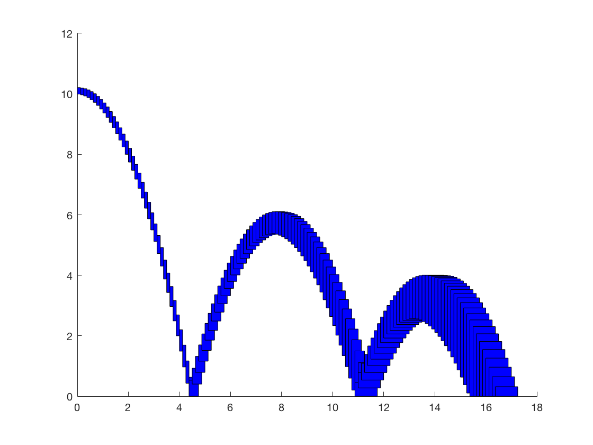
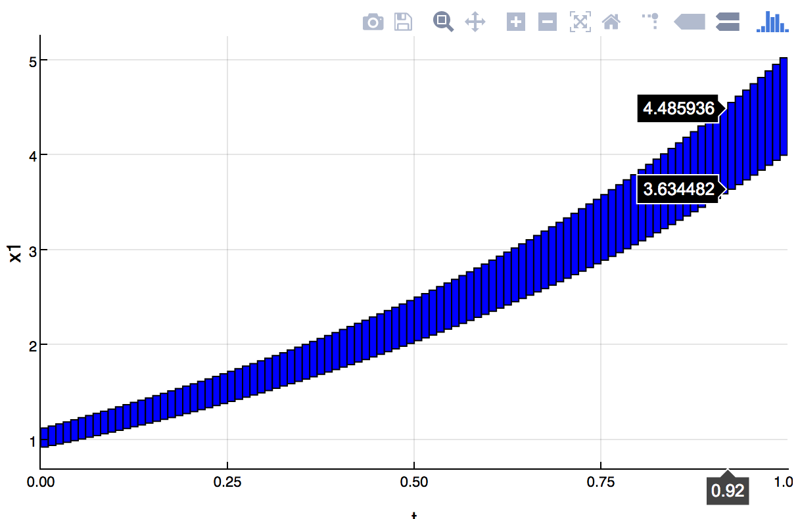
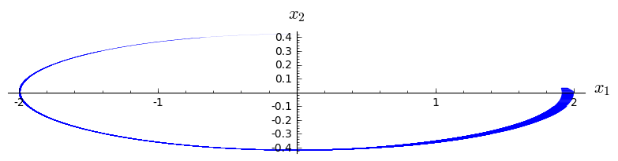

Plotting
There are different options to visualize SpaceEx results. Here we present some alternatives. An illustrative example is presented in Example.
plot_2d_vertices.m (Matlab)
There is a default script that can be downloaded from SpaceEx webpage, plot_2d_vertices.m. For the timed bouncing ball, we get

A revised script with extra options (save, set animations, verbosity, ranges, polytope numbers, reduced computation time) is also available. Assume that we do not want the entire flowpipe (all the polytopes). We can only plot half of it (evenly distributed) by running template_plotting_bball.

Authors: Nikolaos Kekatos, Marcelo Forets.
LazySets.jl (Julia)
LazySets.jl is part of JuliaReach, an online organization that develops tools for reachability computations of dynamical systems in Julia.
This is the more feature-rich alternative, since there are many plotting backends
available. The following example was obtained with the Plotly backend.

Link: LazySets.jl
Authors: Marcelo Forets, Christian Schilling, Frédéric Viry.
plot_2d_vertices.py (Python/SageMath)
This is a Python script that sequentially reads the polygons as polyhedra objects through SageMath, plots them in the same pair of axes. For the pendulum example, we use the simple Python script.

Author: Marcelo Forets.
Bash script
This solution is needs the tools: graph and pdftoppm added to your path.
Also spaceex should be accessible from your path. The script works by transforming
the SpaceEx result to PDF and to PNG formats.
Link: plot_gen.sh.
Author: Christian Schilling.
3PLIB (Java)
The project 3PLIB is a Java Library specialized to planar projections of convex polyhedra. It was initially created to embed this feature in Java applications, and also provides a backend for visualization of high-dimensional reach set approximations computed with SpaceEx.
Link: 3PLIB
Author: Frédéric Viry.